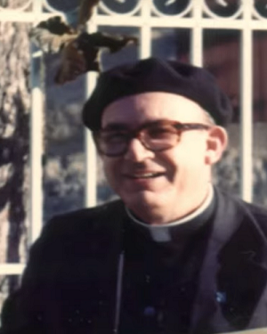
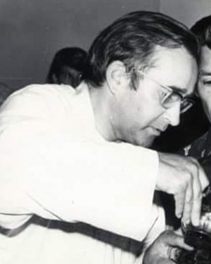
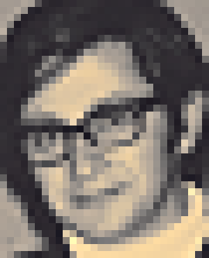
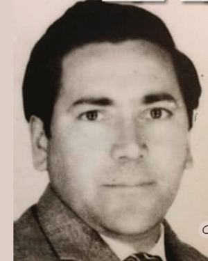

Martires del Evangelio
Enrique Angelelli
Obispo argentino, nacido en Córdoba en 1923, reconocido por su compromiso con los pobres, los trabajadores y los derechos humanos durante los años más difíciles de la historia reciente del país. Como pastor de la diócesis de La Rioja, impulsó una Iglesia cercana al pueblo, inspirada en el Concilio Vaticano II y en la opción preferencial por los pobres. Promovió comunidades de base, cooperativas y una fe comprometida con la justicia. Su testimonio profético le costó la vida: fue asesinado el 4 de agosto de 1976 en un supuesto “accidente” automovilístico, que luego se demostró fue provocado. En 2019, la Iglesia lo reconoció oficialmente como mártir, confirmando que murió “por odio a la fe”.
Gabriel Longueville
Sacerdote francés misionero en Argentina, nacido en 1931 en Etables, Francia. Llegó al país en la década de 1960 como parte del clero fidei donum y se estableció en la diócesis de La Rioja, donde trabajó junto al obispo Enrique Angelelli. Sirvió especialmente en la parroquia de Chamical, compartiendo la vida sencilla del pueblo y acompañando a los más pobres con profunda cercanía pastoral. Fue un sacerdote entregado, alegre y comprometido con el Evangelio vivido desde la justicia y la solidaridad. El 18 de julio de 1976 fue asesinado junto al sacerdote Carlos de Dios Murias por las fuerzas represivas del régimen militar. En 2019, la Iglesia los proclamó beatos mártires, testigos de la fe y del amor preferencial por los pobres.
Carlos de Dios Murias
Sacerdote argentino, nacido en Córdoba en 1945, perteneciente a la Orden de los Frailes Menores Conventuales (franciscanos). De espíritu alegre, comprometido y profundamente evangélico, se destacó por su cercanía a los más humildes y su defensa de la dignidad humana. Llegó a la diócesis de La Rioja respondiendo al llamado del obispo Enrique Angelelli, con quien compartía la visión de una Iglesia pobre para los pobres. En Chamical, trabajó junto al padre Gabriel Longueville, acompañando comunidades rurales y promoviendo la justicia social inspirada en el Evangelio. El 18 de julio de 1976 fue secuestrado, torturado y asesinado junto a Longueville por su testimonio de fe y compromiso con los oprimidos. En 2019, fue beatificado como mártir, reconocido por haber entregado su vida por Cristo y por su pueblo.
Wenceslao Pedernera
Laico, campesino y padre de familia argentino, nacido en San Luis en 1936. Comprometido con su fe y con las luchas por la dignidad de los trabajadores rurales, formó parte activa de los movimientos campesinos y de las comunidades eclesiales de base impulsadas por el obispo Enrique Angelelli en la diócesis de La Rioja. Vivía su cristianismo en lo cotidiano, con una profunda coherencia entre la fe y la vida, siendo un hombre de diálogo, servicio y solidaridad. El 25 de julio de 1976 fue asesinado delante de su familia por su compromiso con el Evangelio y la justicia social. En 2019, la Iglesia lo proclamó beato mártir, reconociendo en su entrega silenciosa y fiel el testimonio de un laico que dio la vida por amor a Cristo y a su pueblo.